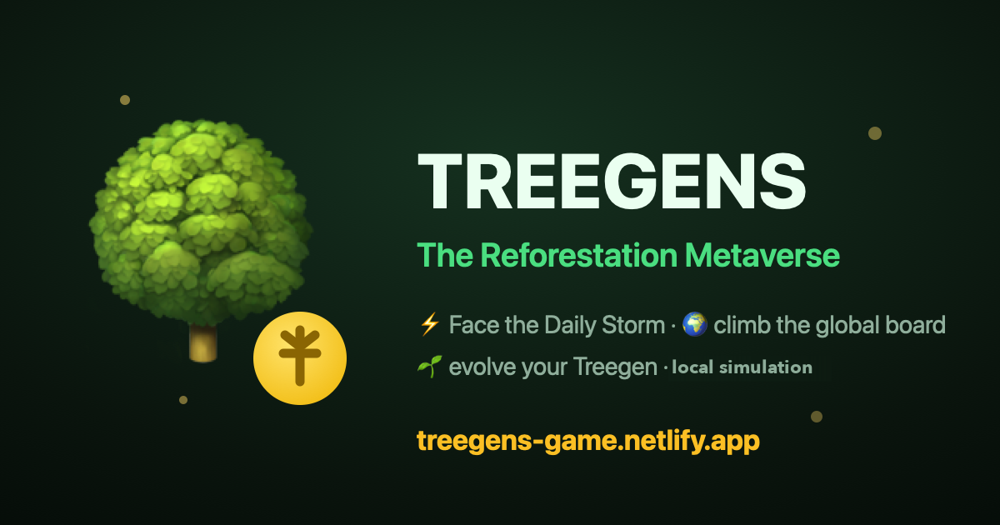
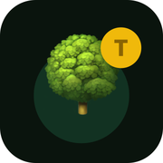

Treegens Game
The Reforestation Metaverse
Catch falling seeds, heal virtual red zones, and grow a Treegen. This is an educational game: play does not plant real trees or move money.

Compatibility and loading
Checking whether this browser can run 3D…
Waiting to load the game…
Looking for a save on this device…
Play without 3D
WebGL is how the grove and explore world draw. If this browser cannot create that context, Seed Storm, the world map, practice proof, and the demo market still work as 2D screens.

Supported browsers and devices
- Recent Chrome, Firefox, Edge, or Safari on desktop
- Recent iOS Safari or Android Chrome
- 3D needs WebGL (or WebGL2). The 2D path does not
- A mouse, keyboard, or touch screen. Gamepad is not required
Troubleshooting
- Update the browser and try again
- Turn hardware acceleration on if the browser offers it
- Close other tabs that are using the GPU
- If 3D keeps failing, use the play button above. The 2D game does not need WebGL
Retry keeps this device save. Reset is the only way to wipe it, and it asks first. Email for updates opens your mail app. There is no waitlist form and nothing is subscribed automatically. You can also add this page to your home screen from the browser menu.
Why 3D failed
What play does and does not do
- In-game trees, TGN, MGRO, market, fund, and DAO
- Local educational simulation. No cash value, no token mint, no NFT mint, and no money sent to a planting project.
- Practice Proof of Plant
- Stays on this device. It is never sent to the live Treegens verifier and does not prove a real tree was planted.
- Public planting totals
- Fetched separately from Treegens as aggregate public stats. They are not produced by catching seeds in this game.
- Real $TGN
- A separate Base token. The game can watch a public address you paste and can link out to buytgn.xyz. It never connects a wallet or moves funds.
How a session works
- Create a Treegen and play First Flight, a short Seed Storm tutorial.
- Catch seeds in the Daily Storm or walk a 3D grove when WebGL works.
- Heal virtual biomes, collect demo items, and optionally share a public score.
A typical first session is a few minutes. Sound and motion can be reduced from the buttons above. Reset asks for confirmation and wipes this browser save only.